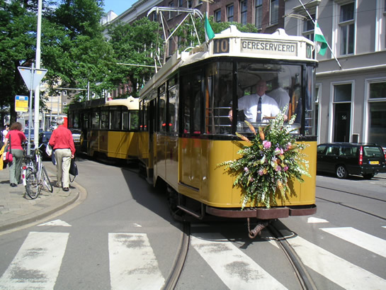
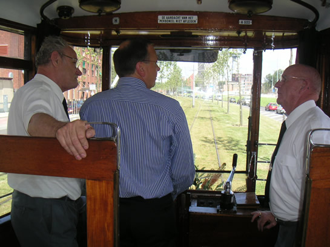
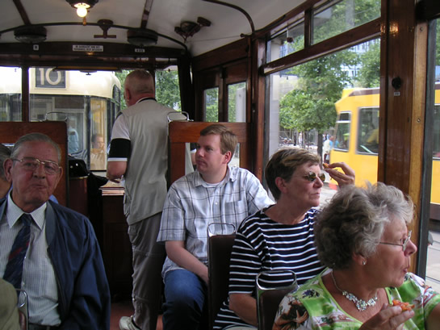
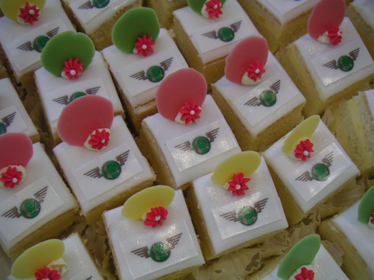
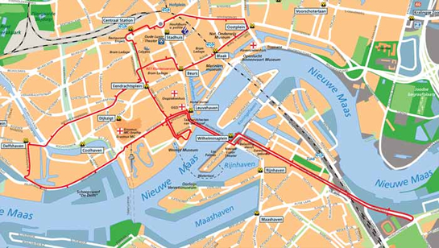

Ook deze zomer rijdt lijn 10!
- maandag 08 december 2008 08:54
- Geschreven door Joachim
Afgelopen vrijdagmiddag werd het startschot gegeven voor het nieuwe rijseizoen van tramlijn 10. Dit gebeurde in bijzijn van de RET-directie, leden van de Rotterdamse gemeenteraad en medewerkers van Stichting RoMeO. Met één van de vierassers en bijbehorend aanhangrijtuig werd de allereerste rit van het seizoen gereden door het centrum van Rotterdam.

Met een boeket op de voorzijde reed een glimmende vierasser met passend aanhangrijtuig door de Rotterdamse straten.
Per 1 juni is Pedro Peters algemeen directeur van de RET geworden. Op de foto hierboven houdt hij een speech voorafgaand aan de feestelijke eerste rit.

Maar daar bleef het niet bij, Peters kreeg ook rijles op de vierasser. En dat gaat iets anders dan een Citadis.

Onder het genot van een hapje en een drankje werden de genodigden door het centrum van de stad gereden in de historische tramrijtuigen.

De hapjes waren geheel in stijl, met op de bovenkant het logo van de Stichting RoMeO.
Lijn 10
Met de oude tramrijtuigen van tramlijn 10 is het mogelijk om door het bruisende centrum en oude stadsdelen van Rotterdam te rijden. De route voert dit jaar langs vele bezienswaardigheden zoals het Museumpark, De Doelen, het Centraal Station, de Kubuswoningen, het Stadhuis en het Feyenoord Stadion. Evenals vorig jaar is het beginpunt van tramlijn 10 op het Willemsplein, aan de voet van de Erasmusbrug in nabijheid van de aanlegsteiger van de Spido.

Dienstregeling
Het rijseizoen van tramlijn 10 loopt deze zomer van 2 juli t/m 4 september. Tijdens de Rotterdamse publieksevenementen op 30 juli (Zomercarnaval), 7 augustus (Rotterdam Racing) en 13 augustus (Dance Parade), rijdt lijn 10 NIET.
|
Vertrektijden (bij benadering)
|
|||||||
|
Willemsplein
|
Centraal Station
|
Oostplein
|
Station Blaak
|
Heemraads
plein |
Wilhelmina
plein |
Stadion Feijenoord
|
Wilhelmina
plein |
|
10.15 |
10.25
11.10 11.55 12.40 13.25 14.10 14.55 15.40 |
10.30
11.15 12.00 12.45 13.30 14.15 15.00 15.45 |
10.35
11.20 12.05 12.50 13.35 14.20 15.05 15.50 |
10.50
11.35 12.20 13.05 13.50 14.35 15.20 16.05 |
11.05
11.50 12.35 13.20 14.05 14.50 15.35 16.20 |
11.10
11.55 12.40 13.25 14.10 14.55 15.40 16.25 |
11.15
12.00 12.45 13.30 14.15 15.00 15.45 16.30 |
Stichting RoMeO
De trams die rijden op tramlijn 10 vallen onder het beheer van de Stichting RoMeO (Rotterdams Openbaar vervoer Museum en Exploitatie Oldtimers). Vrijwilligers zorgen ervoor dat de trams van tramlijn 10 rijvaardig blijven. Hieronder vallen ook historische bussen en een metro. De stichting kan veel hulp gebruiken bij het onderhouden van de trams, bussen en de metro. Daarom kan iedereen zich aanmelden als vrijwilliger bij de stichting, om zo het historisch openbaar vervoer in de Maasstad levend te houden! Surf snel naar de website van Stichting RoMeO en Lijn 10 voor meer informatie.
 Ga naar de website van Stichting RoMeO
Ga naar de website van Stichting RoMeO
 Ga naar de website van Lijn 10
Ga naar de website van Lijn 10
Retmetro.nl wenst je deze zomer een onvergetelijke reis met tramlijn 10!